A three-day camp introducing new technologies that combine concepts from the disciplines of engineering, computer science, fashion and design to girls ages 10-12 years.
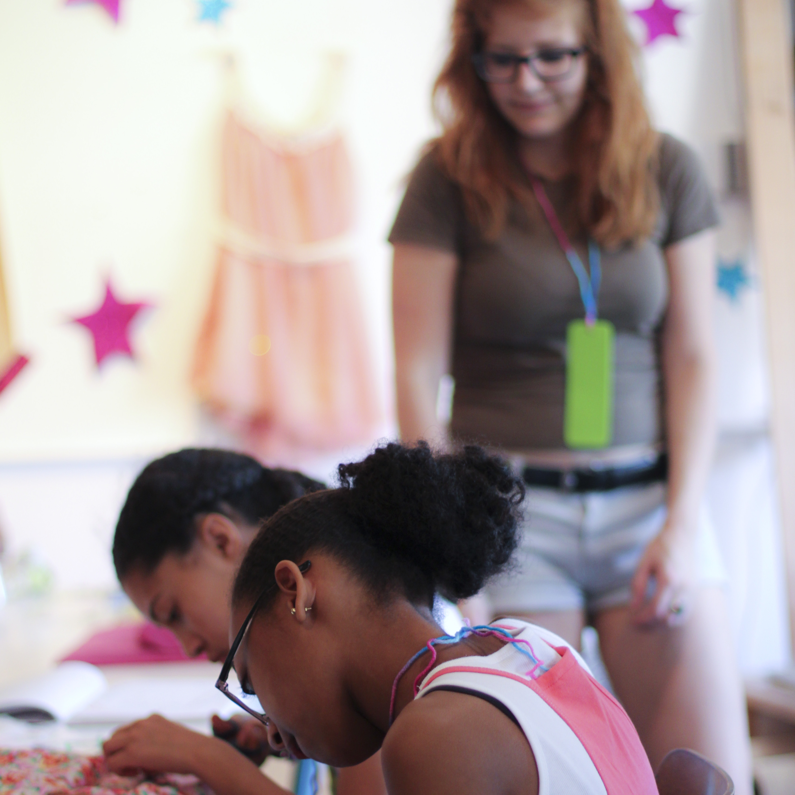
I wanted to empower girls with the ability to make an informed choice about their future by exposing them to new technologies that interested them. The NSF claims that during fifth and sixth grade is when a student typically decides if she wants to puruse interests in STEM or not.
I developed the Electronic Fashion Camp as a way to show women and girls in my local community that engineering and computer science are used in many ways and cross over many different fields.
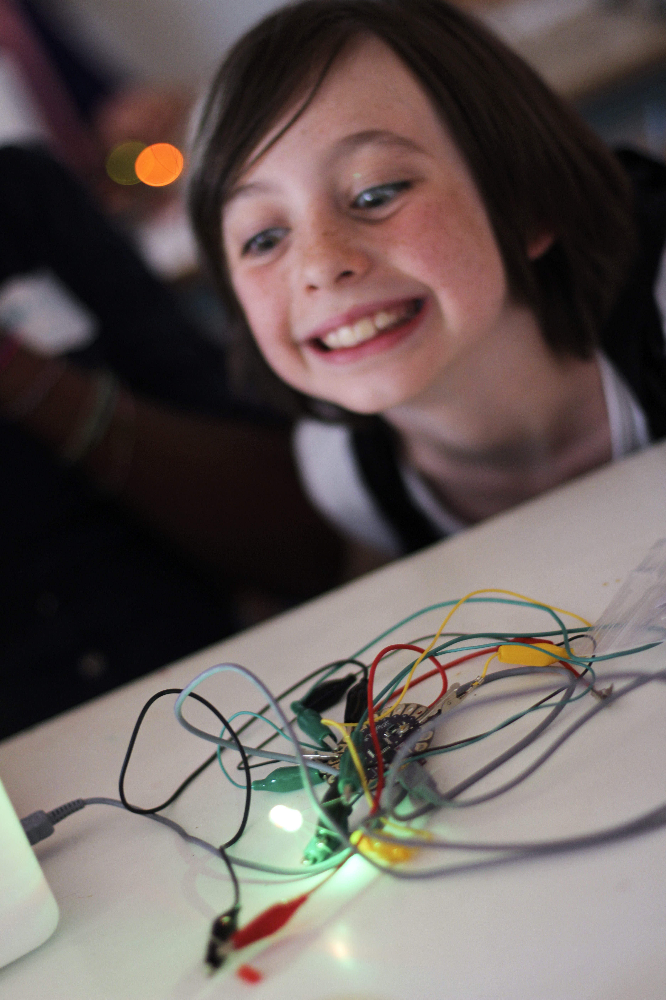 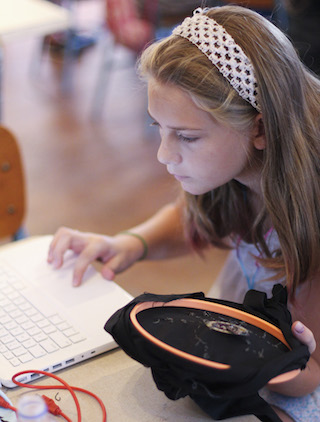
The core building blocks of developing this event were:
Going Forward: For those interested in starting up their own workshops, I want to develop a packaged product and online guides to explain the process. I am also interested in packaging this for educational institutions to use.
http://www.resistorgirl.com/A two-hour workshop introducing girls to: Women Engineers, the Software Development Lifecycle, Wearables and the LilyPad Arduino, a microprocessor board designed for e-textiles. Girls work in groups of 2-3 to complete basic exercises in Sketch, the Arduino programming environment.
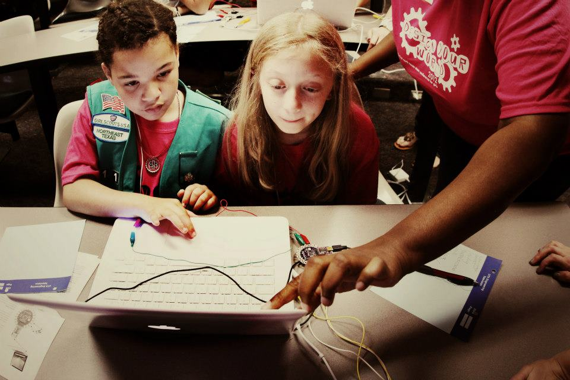
While earning my Masters in Emerging Media and Communications (EMAC), I volunteered to help plan the first annual Design Your World Conference, a STEM conference for girls. I was interested in all things new media and decided to use my skills to run the Marketing and Participant teams.
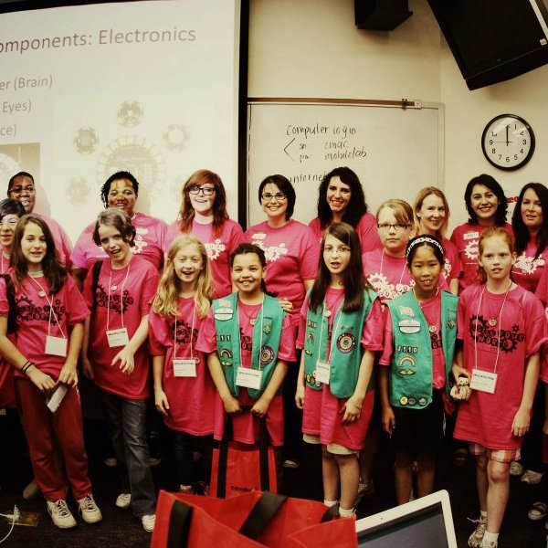
After we built out the structure of the conference, I found another opportunity to help out in planning one of the many workshops offered during the conference. I used the research I was currently completing in my last year of the EMAC program as inspiration and produced a LilyPad Arduino workshop.
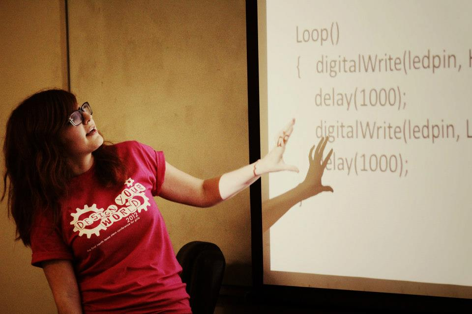
The workshop consisted of a presentation by a fellow woman engineer, an explanation of what the LilyPad Arduino is, what it can do and how it works, followed by a tinkering session where the girls made LEDs blink; we provided other sensors and actuators for the girls to choose from and explore further.
Design Your World "Design Your World Conference" on Fashioning Circuits blog "Fashioning a Brighter Future", UT Dallas ArticleThe Society of Women Engineers (SWE) hosts one national conference and many annual regional conferences each year. University SWE sections submit bids to host the conference in their region and in collaboration with the local professional sections, plan the next years conference if they win.
For the 2010 SWE Region C Conference, we secured a budget of $60,000 and produced a three-day conference for over 300 attendees.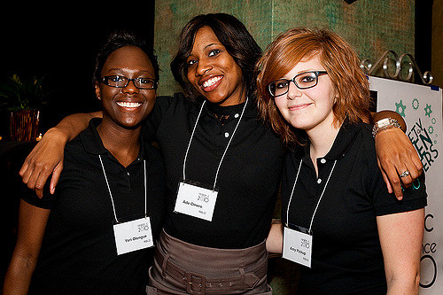
While working on my B.S. in Computer Science, SWE provided phenomenal opportunities to develop my speaking, networking and leadership skills. Whether we were helping organize a robotics competition for local high school students or networking events supporting the university student population, there were always opportunities to contribute.
As I became more involved with the organization, I took on higher levels of leadership, serving as President of our student chapter and serving on student advisory boards acting as a representative to our college administration.Inspired by the amazing technical women I met during my first SWE conference, I started investigating what it would take to host the conference locally. Hosting a conference is a lot of work but can end up being a great source of income for the local collegiate sections, allowing them to host higher quality events, if done right. We worked with our professional section to compile a bid, and while it took two attempts, in 2009, we won the bid to host the 2010 Region C Conference.
I served as Chair of the 2010 Society of Women Engineers Region C Conference over a two year period spanning my last year as an undergraduate and first year in graduate school. Managing all aspects of the conference, end-to-end, allowed for the opportunity to significantly refine my leadersihp skills and really learn what it means to develop and maintain a strong professional network in a relatively short amount of time.
The team of women supporting the conference were the key to its success. We almost doubled the conference budget from the prior year and due to our marketing, saw a significant increase in the number of attendees.
Over the course of conference planning process, we:
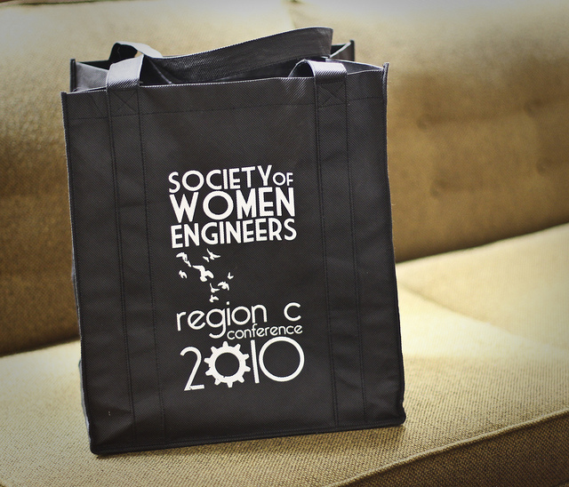
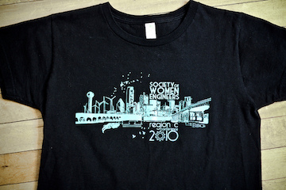
Other SWE positions held:
Fashioning Circuits is a public humanities project with the goals of exploring the intersection of fashion and emerging media, and working with the community to introduce beginners to making and wearables.
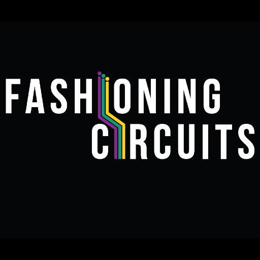
After researching in the EMAC Mobile Lab and the ATEC Game Lab, I was able to use my knowledge of sensors and interaction to pursue my interests in wearables and electronic fashion. I was very lucky that Kim Knight was also in the early stages of forming Fashioning Circuits.
I was motivated by a course I took covering gender in photography. While I was active in women's engineering groups, I had not taken the time to fully understand the impact our culture has on women and their place in the arts and in technology. I think this is the time when I transitioned from someone interested in women's issues to understanding and becoming a feminist.
Inspired by this new found appreciation for women's contributions to art, I was excited to study the history of fashion and media, while being able to build my own wearables in a supportive environment.
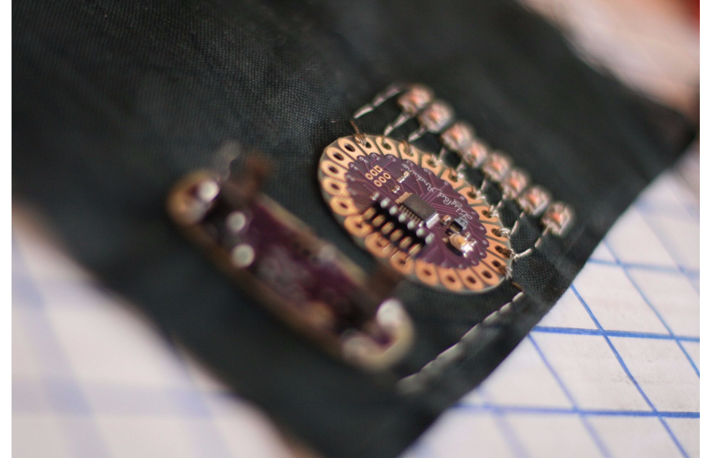
In one of my initial encounters with the LilyPad Arduino, I built a Persistence of Vision (POV) bracelet.
Fashioning CircuitsThe purpose of this research was to produce creative and useful graphic displays of data received from various potential sensors on public service vehicles.
Our scope included distinct variations of public transportation and emergency response vehicles. We researched sensors, vehicle usage, and data visualizations then developed a list of possible sensors alongside compelling and effective graphic solutions.
I was growing increasingly interested in sensors, how they worked, and how to program them. Fascinated by what I had learned about Human-Computer Interaction, I wanted to create data visualizations that were beautiful and effective in conveying big data. This research was a great intersection of the two.
We interviewed the people who use these machines every day to understand what their needs were and how they interacted with the vehicles. We researched current vehicle sensors, potential sensors and came up with creative ways we could potentially combine datasets to present new understandings. We researched data visualization trends and brainstormed to develop some new creative ideas of our own.
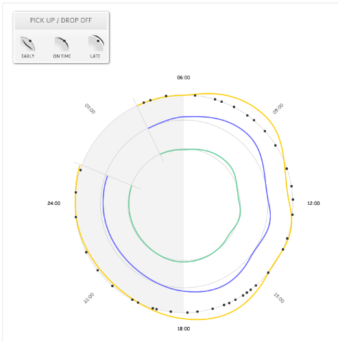 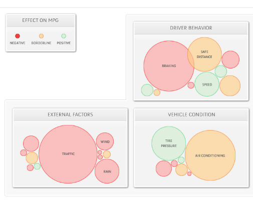
Unlike my experience in the ATEC Game Lab, this research assistantship was much more open to interpretation. This presented challenges at the beginning, but we worked through it and were able to come up with creative and effective solutions for the sponsor.
As a graduate student in Emerging Media and Communication (EMAC) at UT Dallas, I worked as a research assistant coding conversational scripts and automating sound file management for interactive training simulations.
First Person Cultural Trainer (FPCT) is an interactive training simulation sponsored by TRADOC G2 Intelligence Support Activity. The user is inserted into different areas in Iraq and Afghanistan and learns to establish themselves within the community. The user builds trust with locals based on conversations and actions with the ultimate goal of learning about IEDs and other threats.
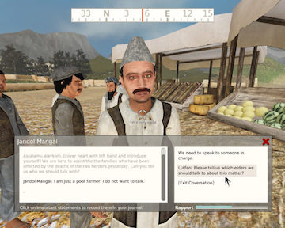
First Person Cultural Trainer paperNursingAP is a collaborative research effort by the UT Dallas school of Arts and Technology and the UT Arlington College of Nursing. NursingAP is a virtual environment built to train students for medical careers. My work contributed to the Neonatal Nurse Practitioner (NPP) training module.
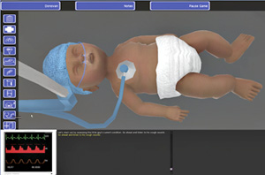
NursingAP.comIn August 2016, I was accepted into to Recurse Center, (formerly Hacker School) a self-directed educational retreat for programmers. Of my three months at Recurse Center, I spent two weeks learning the basics of Python and the remainder of my time code pairing with others and building an Android app on my own.
The first Python web app I built is called Frank. It is a food/restaurant ranking system that allows users to rank their favorite restaurants by calling the Yelp API.
In the future, my goal is to work on a comparison algorithm that suggests restaurants based on user rankings and Yelp review data. I am also interested in incorporating location awareness, alerting users when they are near a restaurant they may want to try based on these user rankings.
The Android app I started building while at Recurse Center allows the user to play back sounds they record using a simple user interface. The user can layer or play back overlapping sounds to create a dynamic beat.
Most of my development experience up to that point was focused on supporting financial or event management web applications. While at Recurse Center, I wanted to learn how to take advantage of the sensors and interactivity that a smart phone offers and make something creative with it.
Going forward, I plan to augment the user interface with improved sound and recording feedback. I am also intersted in learning more about sound design and analysis, then providing real-time sound enhancements to allow for fun effects and more effective playback.
I spent a few years working the decks at RadioUTD, the UT Dallas student run radio station. New shows ran each semester and occasionally I was lucky enough to have a co-hosts. I enjoyed focusing in on one genre each semester, so I could learn more about it and share that with my listeners. The most challenging show was the punk show; punk songs tend to be very short.
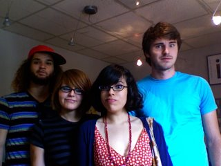
Pickup Show, Spring 2009 - Fall 2010When I moved to Brooklyn in early 2016, I found out about NYC Resistor, a nearby makerspace, and started taking classes there. The members are great and I really enjoy learning to use new tools.
In this class, we learned the basics of how to solder by building a Game of Life board. These kits came from Make.
MakeZine, "Game of Life Board"
The NYC Resistor space has its own Laser Cutting Machine! I participated in this introductory course to learn how to fire the laser cutter.
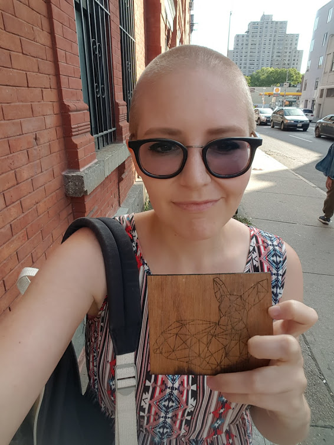
NYC Resistor